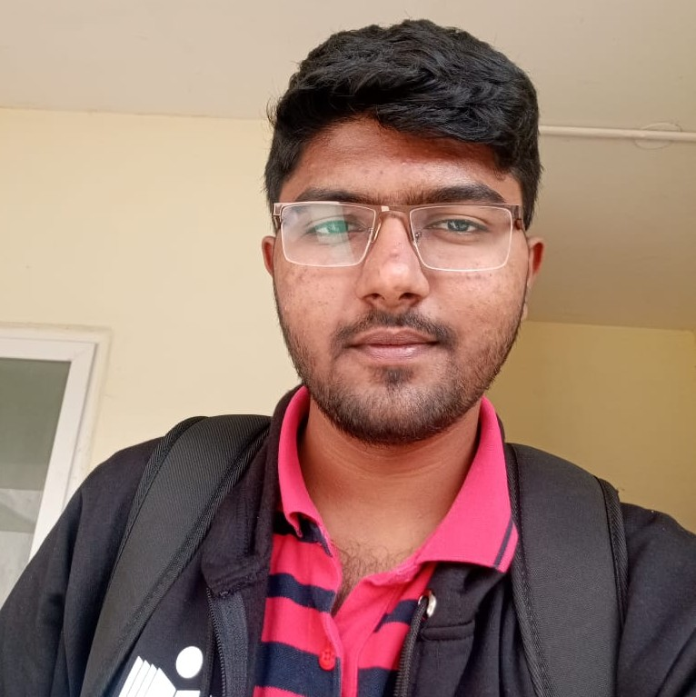

Hi, I'm Akshay S Harits, and I'm currently a student at the Indian
Institute of Technology, Hyderabad. Originally from Mysuru, Karnataka,
I am a Kannada speaker. As a science enthusiast, I have been
fascinated by the concepts of physics, mathematics, and computer
science. Hence, I've embarked on a journey to become a developer while
staying connected with my other
hobbies.
Education
- schooling at St.Joseph's Yelwala, Mysuru (2012-21)
- Pre-University education at BASE PU Bengaluru (2021-23)
-
Engineering at Indian Institute Of Technology Hyderabad (present)
Experience
- Spic Macay IITH Volounteer
- Assistant Manager at E-CELL IITH
- Member Of Cafeteria And Canteen Management committee
- Volounteer at NSS IITH
- Deputy Coordinator Elan N' Vision
- Core ACM IITH Chapter
Skills
Achievements
JEE-MAIN 4311 | JEE-ADV 3711 | KCET 175 | JNV 02
CONTACT ME
~ thank you